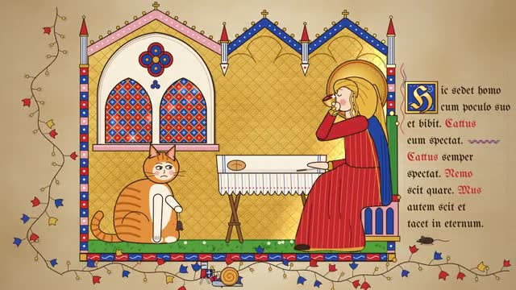

Library / Art, Literature and Diagrams
8 keywords in this category, each one tested and explained in plain language.
Pick keywords as you browse, then press Copy for AI and paste into ChatGPT, Claude or any AI. Copy keywords gives a plain list for Midjourney or Seedance.
Crisp white lines on deep blue paper, like an old building plan or machine drawing.
An old scientific page showing one plant from root to flower, drawn with care and labeled in small neat writing.
A drawing where a slice of the outside is removed so you can peek inside, like a ship, a house or a volcano cut in half.
A page from a naturalist's guidebook, with neat painted birds, bugs or mushrooms, each with a small label and notes.
Boxes and arrows that walk you through steps or choices, one after another.

A handwritten page from the Middle Ages, glowing with gold leaf, rich colors and a giant decorated first letter.
A clean, friendly layout that explains something with icons, simple charts, arrows and short labels.
An illustrated map that follows one journey, with a winding path and little scenes drawn at each stop along the way.